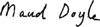

Listen to Part 1:
Vào tháng Mười năm 1885, ông Utterson nhận được một bức thư từ một thanh tra cảnh sát. Thanh tra đề nghị Utterson đến trụ sở cảnh sát ở Scotland Yard. Utterson đến Scotland Yard vào sáng sớm.
Thanh tra cảnh sát nói với Utterson rằng "Cảm ơn ông vì đã đến sớm như vậy".
Utterson đáp lời "Không có gì" "Tôi có thể giúp gì cho ông?".
Thanh tra nói "Đã xảy ra một vụ giết người".
Utterson hỏi "Nạn nhân là ai?".
Thanh tra trả lời "Chúng tôi không biết tên nạn nhân. Nhưng chúng tôi tìm thấy một lá thư đề tên ông. Vì vậy, chúng tôi nghĩ rằng ông quen biết nạn nhân. Ông có thể nhận diện thi thể cho chúng tôi không?".
Khuôn mặt Utterson trở nên tái nhợt.
Ông ấy nói "Hãy cho tôi xem thi thể. Tôi sẽ cho ông biết tên người đàn ông đó nếu tôi biết".
Thanh tra nói "Được thôi, thưa ông. Xin ông đi theo tôi".
Listen to Part 2:
Utterson đi theo thanh tra đến nhà xác. Đây là nơi cảnh sát đặt thi thể những người bị giết hại. Những người thân xác định danh tính thi thể.
Có một thi thể được phủ một tấm vải trắng trong nhà xác. Thanh tra kéo tấm vải ra và chỉ mặt nạn nhân cho Utterson.
Utterson nói "Tôi biết ông ta. Ông ấy là Ngài Danvers Carew. Ông ấy là một bác sĩ nổi tiếng".
Thanh tra nói "Cảm ơn ông, thưa ông".
Utterson nói "Ông đã đề cập rằng nạn nhân mang theo một lá thư đề tên tôi. Ông có biết chuyện gì đã xảy ra không? Ai giết Ngài Danvers? Ở đâu? Tại sao?".
Thanh tra nói "Tôi có lời khai của một nhân chứng. Tôi sẽ cho ông xem".
Thanh tra đưa Utterson trở lại văn phòng. Ông ta chỉ cho ông ấy một tài liệu.
SỞ CẢNH SÁT ĐÔ THỊ
SCOTLAND YARD
Lời khai:Maud Doyle
Listen to Part 3:
Ngày:15 tháng 10 năm 1885
Tên tôi là Maud Doyle. Tôi là người giúp việc. Tôi làm việc cho ông Parker và tôi sống trong nhà ông ấy ở góc phố Regent và Quảng trường Cavendish. Phòng của tôi ở ngay trên cùng của ngôi nhà và tôi có thể nhìn ra Quảng trường Cavendish.
Tối qua, vào khoảng 11 giờ, tôi đã lên phòng mình. Tôi nhớ là mặt trăng sáng rực. Tôi nhìn ra ngoài cửa sổ và nhìn thấy góc Quảng trường Cavendish.
Chỉ có một người đi trên phố. Một ông già tóc bạc đang đi về phía Quảng trường Cavendish. Ông ta mặc đồ đẹp và tay cầm một thứ gì đó - tờ giấy hoặc phong bì trắng.
Sau đó, tôi thấy một người đàn ông khác bước về phía ông già. Người đàn ông thứ hai này nhỏ. Ông ta cầm một cây gậy đi bộ trên tay. Tôi từng thấy người đàn ông này trước đây. Tôi nghĩ ông ta sống gần đây. Ông ta từng đến nhà ông Parker một lần để truyền đạt tin nhắn từ Tiến sĩ Jekyll. Tôi nhớ người đàn ông này vì tôi sợ ông ta. Tôi không biết tại sao tôi sợ ông ta. Tôi nhớ tên ông ta. Ông ta tên là Edward Hyde.
Ông già chặn ông Hyde lại và nói chuyện với ông ta. Ông ta chỉ cho ông ta tờ giấy trên tay. Có lẽ ông ta đang hỏi đường.
Ông Hyde đột nhiên trở nên rất tức giận. Tôi không thể nghe thấy ông ta nói gì, nhưng ông ta giơ cây gậy lên. Ông già có vẻ ngạc nhiên và bắt đầu tránh xa ông Hyde. Nhưng ông Hyde đã đánh ông già bằng cây gậy. Người đàn ông ngã xuống và ông Hyde tiếp tục đánh ông ta vào đầu. Ông ta đánh mạnh đến nỗi cây gậy bị gãy.
Tôi không thấy thêm gì nữa vì tôi đã ngất đi và ngã xuống sàn. Khi tôi có thể đứng dậy, tôi lại nhìn ra cửa sổ. Người đàn ông già nằm trên phố. Tôi có thể thấy máu chảy từ đầu ông ta. Tôi gọi ông Parker. Ông ấy đã cử ai đó đi gọi cảnh sát.
Ký tên: Maud Doyle 
Nhân chứng: Thanh tra Samuel
Listen to Part 4:
Utterson nói "Ồ, vậy là chuyện như thế này. Cảnh sát tìm thấy Ngài Danvers đã chết".
Thanh tra nói "Vâng. Họ cũng tìm thấy lá thư mà Ngài Danvers mang theo. Lá thư đề tên ông. Đó là lý do tại sao tôi yêu cầu ông đến đây sáng nay. Họ cũng tìm thấy một nửa cây gậy bị gãy".
Utterson nói "Tôi hiểu".
Thanh tra cảnh sát hỏi "Ông có biết ông Hyde không?".
Utterson đáp lời "Tôi có gặp ông Hyde một lần".
Thanh tra cảnh sát đưa cây gậy bị gãy cho Utterson. Ông ta hỏi "Đây có phải cây gậy của ông Hyde không?".
Utterson đột nhiên cảm thấy lạnh và ốm. Ông ấy đã từng nhìn thấy cây gậy này trước đây. Ông đã tặng nó cho Tiến sĩ Jekyll vào sinh nhật lần thứ năm mươi của ông ấy.
Ông ấy nói "Tôi không biết đây có phải cây gậy của Hyde không. Nhưng tôi có thể đưa các ông đến nơi ông Hyde sống".
Thanh tra cảnh sát gửi người đi lấy xe ngựa, sau đó ông ta và Utterson ra ngoài. Xe ngựa đến và Utterson chỉ đường cho người đánh xe.
Ông ấy nói "Đưa chúng tôi đến East End. Tôi sẽ chỉ ông hướng đi".
Listen to Part 5:
Đó là một ngày thu lạnh giá. Không khí lạnh thấu xương và những con phố ở London trông xám xịt.
Utterson chỉ đường đến con phố nhỏ mà ông ấy đã từng nhìn thấy ông Hyde. Ông ấy chỉ vào cánh cửa cũ.
Ông ấy nói với thanh tra "Đây là nơi ông Hyde sống".
Thanh tra hét lên "Mở cửa ra" và đập vào cánh cửa cũ.
Cửa sổ ở tầng trên mở ra. Một người phụ nữ mặt đỏ và tóc đỏ nhìn ra ngoài.
Cô ta nói "Ông ta đã đi rồi. Ông muốn gì?".
Thanh tra hỏi "Bà là chủ nhà sao? Tôi muốn vào bên trong. Tôi là cảnh sát".
Người phụ nữ cười nói "Ông ta gặp rắc rối à? Tôi sẽ mở cửa. Ông ta đã làm gì thế?".
Cô ta đi xuống cầu thang và mở cánh cửa cũ. Utterson và thanh tra vào bên trong.
Thanh tra hỏi "Bà muốn tìm Edward Hyde à? Ông ta trả tiền thuê để ở hai phòng này ở tầng một. Đêm qua rất muộn, ông ta đến đây và đưa cho tôi một ít tiền. Ông ta nói là mình sắp đi xa - có lẽ là đến Pháp".
Listen to Part 6:
Utterson và thanh tra nhìn quanh hai căn phòng. Trong phòng có đồ đạc đắt tiền và không gọn gàng. Có quần áo trên sàn nhà. Các ngăn kéo đều mở. Có một số tờ giấy đã cháy trong lò sưởi. Nửa còn lại của cây gậy nằm sau cánh cửa. Trên đó có máu.
Utterson và thanh tra nhìn quanh hai căn phòng.
Thanh tra nói "Hyde chính là người chúng ta đang tìm". "Hyde là kẻ giết Ngài Danvers Carew. Chúng ta phải tìm và bắt ông ta. Chúng ta sẽ lục soát khắp nơi để tìm Edward Hyde".